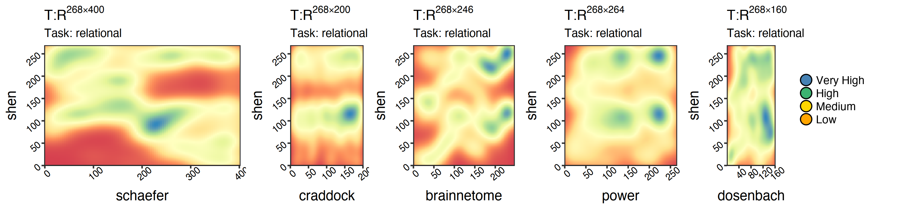
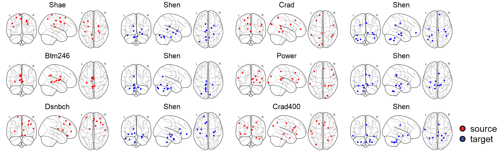
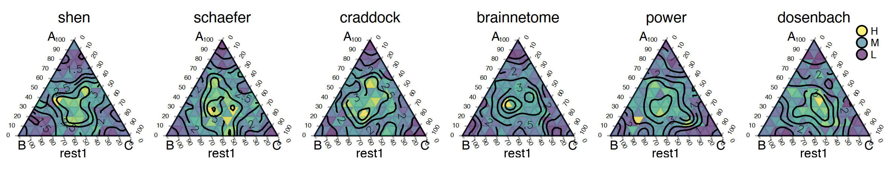
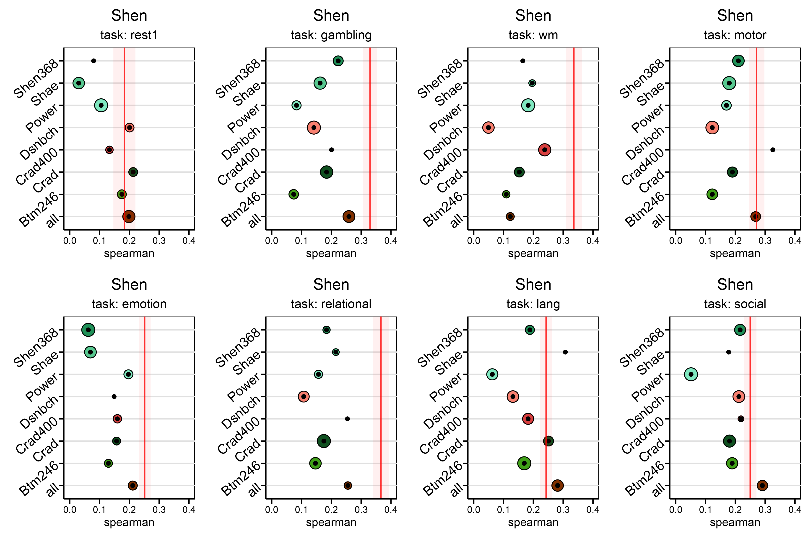
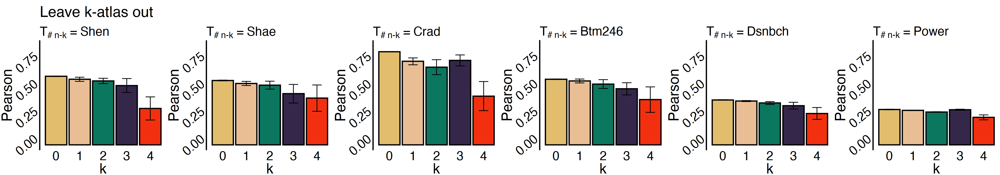
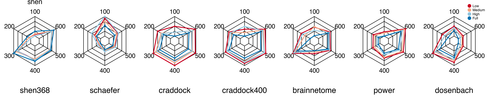

How to Manage Large Brain Imaging Experiments
Machine learning projects on brain imaging data can quickly become difficult to manage. A single study may involve many atlases, tasks, train-test splits, parameter settings, and visualization choices. The hard part is not only running the experiments; it is keeping the code, results, and plots organized enough that you can reproduce them, debug them, and recover from mistakes.
The main takeaway of this post is practical: write reusable Python functions, expose experiment settings as command-line arguments, save intermediate and final results in structured CSV files, and build plots from those saved tables rather than from manual one-off scripts. I will use one brain imaging project as a case study, but the lesson is about workflow design, not about the number of jobs you ran. Our first paper on this was published in Nature Human Behavior, and the optimal transport example was presented in MICCAI 2021.
Take-home: when experiments multiply, treat every run as a row in a table. A good pipeline should make it easy to answer: which parameters produced this result, where is the CSV, which script generated the figure, and what needs to be rerun if an upstream step changes?
Experiment 1: Data-driven mappings and Optimal Transport
This research aims to transform a dataset that has been preprocessed in various brain atlases. As a result, evaluating a machine learning model trained on another atlas is impracticable. Our strategy is to identify a data-driven mapping and then apply it to our dataset to estimate images that could be derived from the missing atlas.
For example, each of the graphs below represents a mapping between a source (x-axis) atlas and a target (y-axis). Each plot is the result of training on a random portion of the human connectome project (HCP) and will later be tested on the subjects who were left out to assess their qualities. Furthermore, for each person, we have eight different types of data correlating to other tasks and one resting scan (i.e., nine sets of visualizations in total).
The heatmap below is a representative output; the key point is that this is one panel among many generated by the same pipeline.

|
|
Rule 1: Put reusable computation in functions before writing the experiment script. The script should orchestrate functions; it should not hide the core analysis inside copy-pasted blocks.
It was time to determine which brain regions were accountable for the highest transportation based on the policies we had learned. We used different atlases and visualized the nodes based on the coordinates of each one.
This surface view highlights which regions carry the strongest transported signal.

Except for the surface plots, all our plots are in R. However, in both cases, we avoided plotting each graph individually and merging it later in Adobe Illustrator. For example, in R, we defined a function named my_plot<-function(c_data, source, target, task) to save all possible eight plots into a list called my_plots <- list(). This avoids situations where changing a color, caption, or axis label requires rebuilding every panel by hand.
|
|
It’s time to define our second rule:
Rule 2: Generate related figures from one plotting script and one structured results table. Do not manually create, align, or caption many similar images one by one.
Experiment 2: Simplex and Intrinsic Evaluations
In this set of experiments, we’ll run optimal transport over a simulation dataset and three target atlases to see how our algorithm works. To do this, we need to run the Sinkhorn function three times with different arguments each time.

This is the Python function we used for this experiment: a small wrapper that calls the previous Sinkhorn function. The important point is that the atlas choices become arguments, so we avoid writing the same analysis code three times.
|
|
Experiment 3: Downstream Analysis: All in one plot
Now, it’s time to summarize many experiment runs in a way that is easy to inspect. For all pairs of atlases, including one and all-way OT, to get there. Let’s say we need one plot for a specific task that shows how well it predicts IQ when optimal transport is used on all other atlases. We’ll need eight different plots to do this for all of our other tasks. We decided to use dot plots where the y-axis is the source, and the x-axis is the performance for the given task and the target. This makes it easy to compare settings without opening many separate plots.

In this graph, the red line is the best value we got from preprocessing, and the radius of each dot shows the standard deviation for 100 exams. These graphs show the results of experiments that took place throughout $8 \times 8 \times 100 $ trials. We may need to do the same in our supplementary material for all the $8$ targets. But, it will only take a few seconds if the plotting code reads from well-named CSV files produced by reusable functions.
How can you save the results that will be used for visualization? To answer this question, let’s first talk about your scripts. Add explicit arguments for the settings you expect to vary, such as source atlas, target atlas, task, cost function, number of iterations, and output path. Avoid changing variables inside the main function by hand; that makes the result harder to reproduce.
|
|
Here’s an example of a bash script that uses the Shen atlas as the source, Craddock as the target, and working memory as the specified task.
|
|
Rule 3: Make Python scripts configurable from the command line. Set defaults, specify types, write helpful names, and call the reusable functions from a small main entry point.
Experiment 4: Dataset simulation
In this case, we were asked to run another set of experiments to simulate a dataset that had only been preprocessed on a few atlases. Suppose we want to remove k atlases one by one and see if our algorithm can them or not.

We may need to define a new function named all_way_ot:
|
|
Now, you have two options to implement sinkhorn_n: To make it work, you could either call the original sinkhorn several times and merge the results, or you could make a function like Sinkhorn that takes into account $n-k$ brain mappings. Here, we’ll let you figure out which is the best choice for your case.
Experiment 5: Parameter Sensitivity
So far, we have separated computation, plotting, and experiment configuration. Now, we want to see how our algorithm reacts to changes in the free parameters we can choose from. There is a pentagon plot that we will use to look at the sensitivity of the frame size and training size. If you have a wider frame size, there are fewer transportation plans, and there could be more robust policies when there are more training plans. We will use the same visualization principles (i.e., Rule 2) and modularized coding (i.e., Rule 1,3).

But, we start to notice that there is a new problem. How to save new results and transmit them to visualization units?
Using consistent naming conventions is very important. A pandas DataFrame with columns such as source, target, task, score, and parameter values is one of the simplest ways to keep track of results. Save it as CSV, then make every visualization read from that CSV instead of from scattered intermediate objects.
|
|
It is also useful to have naming conventions so that scripts can be rerun safely on different CPUs or machines.
In our example, we defined a function named shuffle_list(atlases) so each run is more likely to try a new combination of arguments, while combinations that already have a CSV output are skipped with os.path.exists(filename).
|
|
Rule 4: Name output files so the filename records the key experiment settings. The filename should be informative enough that plotting scripts can load the right CSVs without manual bookkeeping.
In our project, we found a mistake when processing dosenbach and power atlases. Rule 4 helped us recover because the affected outputs were easy to identify by filename. We removed only the files that included those atlas names and reran the existing scripts for those cases.
Rule 5: Design experiments so partial reruns are possible. If an upstream preprocessing step is wrong, delete only the CSVs and models linked to that mistake, rerun the relevant scripts, and let the plotting code rebuild the figures from the corrected outputs.
The point is simple: when your project has many moving parts, the clean CSVs, reusable functions, command-line arguments, and naming conventions matter as much as the model. They turn a large experiment into a pipeline you can inspect, rerun, and trust.